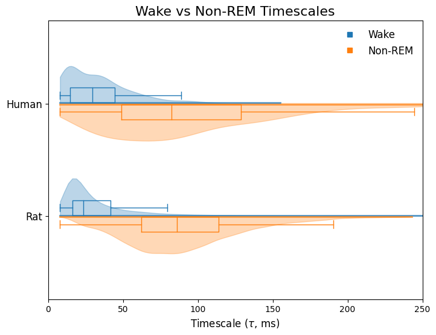

[1]:
import os
import re
from tqdm.notebook import tqdm
import numpy as np
import pandas as pd
import matplotlib
import matplotlib.pyplot as plt
import matplotlib.lines as mlines
import seaborn as sns
from ndspflow.workflows import BIDS, WorkFlow
from timescales.fit import PSD
from mne.io import read_raw_edf
from mne_bids import BIDSPath, read_raw_bids
import nilearn
from nilearn import plotting, image
from sklearn.preprocessing import minmax_scale
from timescales.fit import PSD
from neurodsp.spectral import compute_spectrum
from neurodsp.utils.norm import normalize_sig
MNI Opeen iEEG Atlas Data#
[2]:
# Load region and channel info
rpath = '/Users/ryanhammonds/projects/data/sleep2/Information/RegionInformation.csv'
regions = pd.read_csv(rpath)
cpath = '/Users/ryanhammonds/projects/data/sleep2/Information/ChannelInformation.csv'
ch_info = pd.read_csv(cpath)
# Remove single quotes from channel names
ch_info['Channel name'] = [i[1:-1] for i in ch_info['Channel name']]
# Get row inds and channel names
rinds = [(i, j) for i, j in ch_info['Region'].items()]
inds = [i[0] for i in rinds]
rinds = [i[1] for i in rinds]
select = [i[1:-1] for i in ch_info.iloc[inds]['Channel name']]
select.sort()
# List of file names
files = os.listdir('/Users/ryanhammonds/projects/data/sleep2/data2')
files_noext = [i[:-5] for i in files]
# Sort
inds = np.argsort(files_noext)
files_noext = np.array(files_noext)[inds]
files = np.array(files)[inds]
# Filter for Dixi intracerebral electrodes (largest sample size)
files_filt = []
regions_inds = []
for i, f in enumerate(files_noext):
if f[1] == 'D':
ind = (ch_info['Channel name'] == f).values
regions_inds.append(ch_info[ind]['Region'].values[0])
files_filt.append(files[i])
regions_inds = np.array(regions_inds)
[3]:
# Convert list of file strings to one concat string
file_str = ''
for f in files:
file_str += f
ch_files = {
'wake':{'files':[], 'coords':[]},
'nrem2':{'files':[], 'coords':[]},
'nrem3':{'files':[], 'coords':[]},
'rem':{'files':[], 'coords':[]}
}
trial_lookup = {'W': 'wake', 'N': 'nrem2', 'D': 'nrem3', 'R': 'rem'}
regions = []
inds = []
for i, ch in enumerate(ch_info['Channel name'].values):
m = re.search(ch + '.\.edf', file_str)
if m is not None:
fstr = m.group()
trial = fstr[-5]
if trial == 'R':
# skip rem sleep
continue
key = trial_lookup[trial]
ch_files[key]['files'].append(fstr)
ch_files[key]['coords'].append(
(ch_info.iloc[i].x, ch_info.iloc[i].y, ch_info.iloc[i].z)
)
regions.append(ch_info.iloc[i].Region)
inds.append(i)
Fit Timescales#
[4]:
base_path = '/Users/ryanhammonds/projects/data/sleep2/data2/'
fs = 200
wake_files = ch_files['wake']['files']
nrem_files = [*ch_files['nrem2']['files'], *ch_files['nrem3']['files']]
n_wake_files = len(wake_files)
n_nrem_files = len(nrem_files)
wake_taus = np.zeros(n_wake_files)
wake_rsq = np.zeros(n_wake_files)
nrem_taus = np.zeros(n_nrem_files)
nrem_rsq = np.zeros(n_nrem_files)
for i, f in tqdm(enumerate(wake_files), total=len(wake_files)):
edf = read_raw_edf(base_path + f, verbose=False)
sig = edf.get_data()[0]
sig = normalize_sig(sig, 0, 1)
psd = PSD()
psd.compute_spectrum(sig, fs, ar_order=5, f_range=(.01, 20))
psd.fit()
wake_taus[i] = psd.tau
wake_rsq[i] = psd.rsq
for i, f in tqdm(enumerate(nrem_files), total=len(nrem_files)):
edf = read_raw_edf(base_path + f, verbose=False)
sig = edf.get_data()[0]
sig = normalize_sig(sig, 0, 1)
psd = PSD()
psd.compute_spectrum(sig, fs, ar_order=5, f_range=(.01, 20))
psd.fit()
nrem_taus[i] = psd.tau
nrem_rsq[i] = psd.rsq
[5]:
# Organize results
inds = np.where(wake_rsq > .5)[0]
wake_taus = wake_taus[inds]
wake_rsq = wake_rsq[inds]
wake_coords = np.array(ch_files['wake']['coords'])[inds]
wake_taus_ms = wake_taus * 1000
inds = np.where(nrem_rsq > .5)[0]
nrem_taus = nrem_taus[inds]
nrem_rsq = nrem_rsq[inds]
nrem_coords = np.array([*ch_files['nrem2']['coords'], *ch_files['nrem3']['coords']])[inds]
nrem_taus_ms = nrem_taus * 1000
Convert Timescales to Surface Map#
[6]:
# Load MNI template
template_path = '/Users/ryanhammonds/projects/data/sleep2/'
template_path += 'mni_icbm152_nlin_sym_09a_nifti/mni_icbm152_nlin_sym_09a/'
template_path += 'mni_icbm152_t1_tal_nlin_sym_09a.nii'
template = image.load_img(template_path)
# Wake timescales
wake_statmap = np.zeros_like(np.asanyarray(template.dataobj))
for c, t in zip(wake_coords, wake_taus_ms):
i, j, k = image.coord_transform(*c, np.linalg.inv(template.affine))
wake_statmap[int(i), int(j), int(k)] = t
wake_max_stat = wake_statmap.max()
# NREM timescales
nrem_statmap = np.zeros_like(np.asanyarray(template.dataobj))
for c, t in zip(nrem_coords, nrem_taus_ms):
i, j, k = image.coord_transform(*c, np.linalg.inv(template.affine))
nrem_statmap[int(i), int(j), int(k)] = t
nrem_max_stat = nrem_statmap.max()
# Smooth
radius = 25
wake_statmap = nilearn.image.new_img_like(template, wake_statmap)
wake_statmap_smooth = image.smooth_img(wake_statmap, radius)
nrem_statmap = nilearn.image.new_img_like(template, nrem_statmap)
nrem_statmap_smooth = image.smooth_img(nrem_statmap, radius)
[7]:
# Wake: volumetric to surface
fsaverage = nilearn.datasets.fetch_surf_fsaverage(mesh='fsaverage')
curv_right = nilearn.surface.load_surf_data(fsaverage.curv_right)
curv_right_sign = np.sign(curv_right)
texture_right = nilearn.surface.vol_to_surf(wake_statmap_smooth, fsaverage.pial_right, radius=radius)
curv_left = nilearn.surface.load_surf_data(fsaverage.curv_left)
curv_left_sign = np.sign(curv_left)
texture_left = nilearn.surface.vol_to_surf(wake_statmap_smooth, fsaverage.pial_left, radius=radius)
# Scaling Note:
# Min-max rescaling ensures full colorbar is used (not only positive values), this is a quirk of
# using nilearn/mpl to plot. NREM max is larger, so we use the min a it's negative to that both
# wake and nrem start at the same value. Then we normalize the colorbar back to (0, max_tau).
wake_texture_right = minmax_scale(texture_right, (-nrem_max_stat, wake_max_stat))
wake_texture_left = minmax_scale(texture_right, (-nrem_max_stat, wake_max_stat))
# NREM: volumetric to surface
curv_right = nilearn.surface.load_surf_data(fsaverage.curv_right)
curv_right_sign = np.sign(curv_right)
texture_right = nilearn.surface.vol_to_surf(nrem_statmap_smooth, fsaverage.pial_right, radius=radius)
curv_left = nilearn.surface.load_surf_data(fsaverage.curv_left)
curv_left_sign = np.sign(curv_left)
texture_left = nilearn.surface.vol_to_surf(nrem_statmap_smooth, fsaverage.pial_left, radius=radius)
nrem_texture_right = minmax_scale(texture_right, (-nrem_max_stat, nrem_max_stat))
nrem_texture_left = minmax_scale(texture_right, (-nrem_max_stat, nrem_max_stat))
Plot Surfaces#
[9]:
# Create grid
fig = plt.figure(figsize=(8, 10))
gs = plt.GridSpec(155, 110, figure=fig)
# Titles
tax = fig.add_subplot(gs[:5, :])
tax.text(.5, .5, 'Cortical Timescale Gradient', ha='center', va='center', size=20)
tax.axis('off')
tax0 = fig.add_subplot(gs[:55, :5])
tax0.text(.5, .5, 'Non-REM', rotation=90, ha='center', va='center', size=14)
tax0.axis('off')
tax1 = fig.add_subplot(gs[55:105, :5])
tax1.text(.5, .5, 'Wake', rotation=90, ha='center', va='center', size=14)
tax1.axis('off')
tax2 = fig.add_subplot(gs[105:155, :5])
tax2.text(.5, .5, 'Non-REM - Wake', rotation=90, ha='center', va='center', size=14)
tax2.axis('off')
# Subplots
ax0 = fig.add_subplot(gs[5:55, 5:55], projection='3d')
ax1 = fig.add_subplot(gs[5:55, 55:105], projection='3d')
ax2 = fig.add_subplot(gs[55:105, 5:55], projection='3d')
ax3 = fig.add_subplot(gs[55:105, 55:105], projection='3d')
cax0 = fig.add_subplot(gs[30:80, 105:])
ax4 = fig.add_subplot(gs[105:155, 5:55], projection='3d')
ax5 = fig.add_subplot(gs[105:155, 55:105], projection='3d')
cax1 = fig.add_subplot(gs[105:, 105:])
# Plot
view = 'lateral'
# NREM
plotting.plot_surf_stat_map(
fsaverage.infl_right, nrem_texture_right, hemi='right',
title='', colorbar=False, view=view, vmax=nrem_max_stat,
symmetric_cbar=False, threshold=None, cmap='viridis',
axes=ax0, thresh=.01
)
plotting.plot_surf_stat_map(
fsaverage.infl_left, nrem_texture_left, hemi='left',
title='', colorbar=False, view=view, vmax=nrem_max_stat,
symmetric_cbar=False, threshold=None, cmap='viridis',
axes=ax1, thresh=.01
)
# Wake
plotting.plot_surf_stat_map(
fsaverage.infl_right, wake_texture_right, hemi='right',
title='', colorbar=False, view=view, vmax=nrem_max_stat,
symmetric_cbar=False, threshold=None, cmap='viridis',
axes=ax2, thresh=.01
)
plotting.plot_surf_stat_map(
fsaverage.infl_left, wake_texture_left, hemi='left',
title='', colorbar=False, view=view, vmax=nrem_max_stat,
symmetric_cbar=False, threshold=None, cmap='viridis',
axes=ax3, thresh=.01
)
# NREM - Wake
nrem_minus_wake_left = nrem_texture_left-wake_texture_left
nrem_minus_wake_right = nrem_texture_right-wake_texture_right
plotting.plot_surf_stat_map(
fsaverage.infl_right, nrem_minus_wake_right, hemi='right',
title='', colorbar=False, view=view, vmax=nrem_max_stat,
symmetric_cbar=False, threshold=None, cmap='coolwarm',
axes=ax4
)
plotting.plot_surf_stat_map(
fsaverage.infl_left, nrem_minus_wake_left, hemi='left',
title='', colorbar=False, view=view, vmax=nrem_max_stat,
symmetric_cbar=False, threshold=None, cmap='coolwarm',
axes=ax5
)
# Colorbars
norm = matplotlib.colors.Normalize(vmin=0, vmax=nrem_max_stat)
fig.colorbar(matplotlib.cm.ScalarMappable(norm=norm, cmap='viridis'),
cax=cax0, orientation='vertical')
vmin = min(nrem_minus_wake_left.min(), nrem_minus_wake_right.min())
vmax = min(nrem_minus_wake_left.max(), nrem_minus_wake_right.max())
norm = matplotlib.colors.Normalize(vmin=-vmax, vmax=vmax)
fig.colorbar(matplotlib.cm.ScalarMappable(norm=norm, cmap='coolwarm'),
cax=cax1, orientation='vertical')
cax0.set_ylabel(r'$\tau$ (milliseconds)', rotation=-90, labelpad=20)
cax1.set_ylabel(r'$\Delta\tau$ (milliseconds)', rotation=-90, labelpad=20)
plt.savefig('cortical_timescales_4.pdf');
Compare Human vs Rat Timescales#
[26]:
rat_wake_taus_ms = np.load('./rat_taus_lfp_wake.npy')
rat_nrem_taus_ms = np.load('./rat_taus_lfp_nrem.npy')
[27]:
def plot_half_violin(dist, pos, side, color, ax, label=None):
v1 = ax.violinplot(dist, positions=[pos], vert=False, showextrema=False)
if side == 'top':
b = v1['bodies'][0]
m = np.mean(b.get_paths()[0].vertices[:, 0])
b.get_paths()[0].vertices[:, 1] = np.clip(b.get_paths()[0].vertices[:, 1],
np.mean(b.get_paths()[0].vertices[:, 1]),
np.inf)
elif side == 'bottom':
b = v1['bodies'][0]
m = np.mean(b.get_paths()[0].vertices[:, 1])
b.get_paths()[0].vertices[:, 1] = np.clip(b.get_paths()[0].vertices[:, 1], -np.inf, m)
b.set_color(color)
box_kwargs = dict(
boxprops = dict(color=color),
capprops=dict(color=color),
whiskerprops=dict(color=color),
flierprops=dict(color=color, markeredgecolor=color),
medianprops=dict(color=color)
)
if side == 'top':
ax.boxplot(dist, positions=[pos+.055], vert=False, showfliers=False, widths=.1, **box_kwargs)
pos_shift = pos+.005
ax.plot([dist.min(), dist.max()], [pos_shift, pos_shift], color=color, lw=2, alpha=.7)
elif side == 'bottom':
ax.boxplot(dist, positions=[pos-.055], vert=False, showfliers=False, widths=.1, **box_kwargs)
pos_shift = pos-.005
ax.plot([dist.min(), dist.max()], [pos_shift, pos_shift], color=color, lw=2, alpha=.7)
ax.set_yticks([])
[28]:
fig, ax = plt.subplots(figsize=(8, 6), sharey=True)
plot_half_violin(wake_taus_ms, pos=1, side="top", color='C0', ax=ax)
plot_half_violin(nrem_taus_ms, pos=1, side="bottom", color='C1', ax=ax)
plot_half_violin(rat_wake_taus_ms, pos=.25, side="top", color='C0', ax=ax)
plot_half_violin(rat_nrem_taus_ms, pos=.25, side="bottom", color='C1', ax=ax)
ax.set_yticks([1, .25], ['Human', 'Rat'], rotation=0, size=12)
ax.set_xlabel(r'Timescale ($\tau$, ms)', size=12)
w = mlines.Line2D([], [], color='C0', marker='s', ls='', label='Wake')
n = mlines.Line2D([], [], color='C1', marker='s', ls='', label='Non-REM')
ax.legend(handles=[w, n], frameon=False, fontsize=12)
ax.set_xlim(0, 250)
ax.set_title('Wake vs Non-REM Timescales', size=16);
plt.savefig('wake_v_nrem_human_v_rat.pdf')
